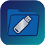

NTFS File Manager
Fast USB OTG & internal storage, direct NTFS/exFAT access
The app has no account and the developer runs no server — nothing you do here syncs to us, and we never see your files. It is not, however, an entirely offline app: it shows ads, offers an optional Premium subscription, and has optional features that connect to cloud storage, network shares and online media. The Privacy Policy spells all of that out.
Private · hosted by Google
A short Google Form. Answers are stored by Google Forms, not on a server of ours. Don’t paste passwords, recovery keys, or file contents.
Opens in a new tab. Google hosts the answers.
File management is the app's entire purpose, so it needs direct access to your device's storage to browse, copy, move, and delete files. This permission is requested only when you first open the app's file browser — never bundled with anything else, and nothing is uploaded anywhere. Everything the app does with your files stays entirely on your device.
Make sure your device supports USB OTG and the cable/adapter supports data (some cables are charge-only). When you plug in a drive formatted as NTFS or exFAT, the app should detect and mount it automatically. If Android also shows its own "USB drive not supported" notification at the same time — that's expected and safe to dismiss. That notification comes from Android's own system storage service, which doesn't understand NTFS; it has no bearing on whether this app can read the drive.
Safe Folder is a hidden folder that requires your device PIN, pattern, password, or biometric to open. It's protection against casual snooping if someone else picks up your phone — it is not encryption. Files inside it are stored the same way as any other file on your device.
If a format is interrupted (drive unplugged, app killed) before it finishes, the drive may be left with a valid partition table but no usable filesystem. Reformat the drive (using this app or a PC) to recover it. Never disconnect a drive while a format or transfer is in progress — the in-app notification will tell you when it's safe to unplug.
Premium is a subscription billed by Google Play, and it renews automatically until you cancel. Cancel it in Google Play → Profile → Payments & subscriptions → Subscriptions, or at play.google.com/store/account/subscriptions. You keep Premium until the end of the period you've already paid for. Uninstalling the app does not cancel the subscription — you have to cancel through Google Play. Refunds are handled by Google Play, not by us; see Section 7 of the Terms.
Three options. Subscribing to Premium removes advertising entirely. If you're in the EEA, UK or Switzerland, the app asks for your consent before showing personalized ads and you can change or withdraw that choice any time in Settings → Privacy → Ad privacy options — refusing doesn't disable any feature. Anywhere else, you can reset or delete your advertising ID in Android Settings → Privacy → Ads. Ads never use anything from your files to target you.
On a home network you trust, yes — access is protected by a PIN you set, with lockout after repeated wrong attempts. But while a server is running, the folder you picked is reachable by anything on the same network that has your device's address and the PIN, and the browser and FTP modes don't encrypt traffic. Don't run it on public, guest, café, airport or hotel Wi-Fi. Stop the server when you're done — the ongoing notification shows you whenever one is running.
Not in this version. Cloud accounts you can connect are Dropbox and Microsoft OneDrive. You sign in with that provider, never with us. Google Drive is not available right now.
We don't host or control any of it. The app reads publicly published catalogues — iptv-org for free-to-air channels, Radio Browser for stations, Audius, the Internet Archive and Pexels for music and video — and when you play something, your device connects straight to that third party's own stream. Availability, quality and licensing are entirely up to whoever operates the stream, and a channel appearing in a list isn't a claim by us that it's licensed where you are. Rights holders can reach us at the address in Section 19 of the Terms.